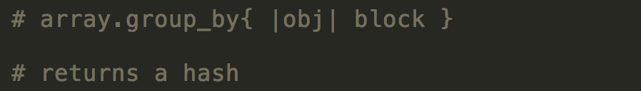
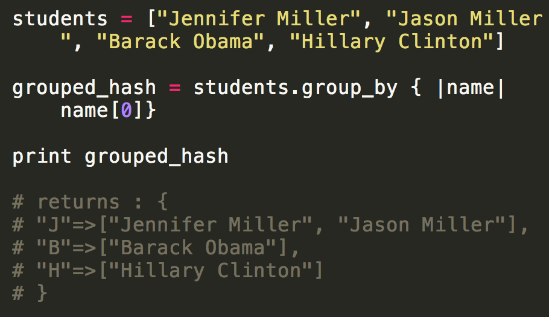

The Ruby group_by method belongs to the Enumerable class. This method allows one to create collections of elements based on criteria. The method takes an input array and a block of code an it outputs a hash. The syntax are as follows:
Here is a simple example that uses group_by to group a list of students by the first letter of their first names:
A More Complex Example
The previous example isn't particularly useful. But the group_by method could be extended to accomplish much more complex tasks. Take for example a university that wants to assign unique email addresses to each of it's 10,000 students. The basic template for a student's email address is the first letter of his first name concatenated with the first four letters of his last name. However, some students will have identical addresses if the name creation ends there. Taking for example the 'students' array above, group_by could be used to group together all students with email address beginning jmill. Then, each student in the array corresponding to key 'jmill' in the group_by hash would have a unique number appended to 'jmill'. This would ensure a unique email address for each student.